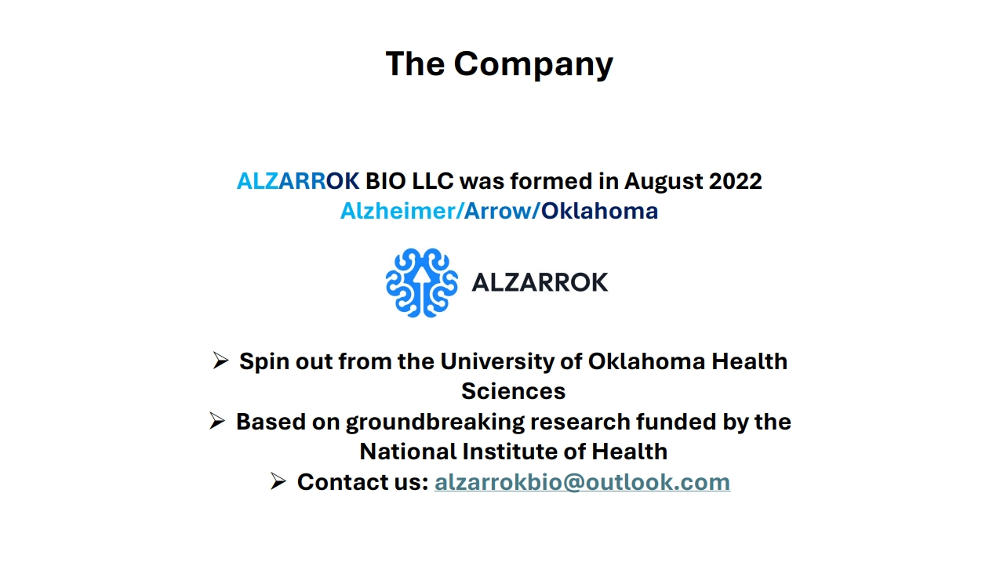
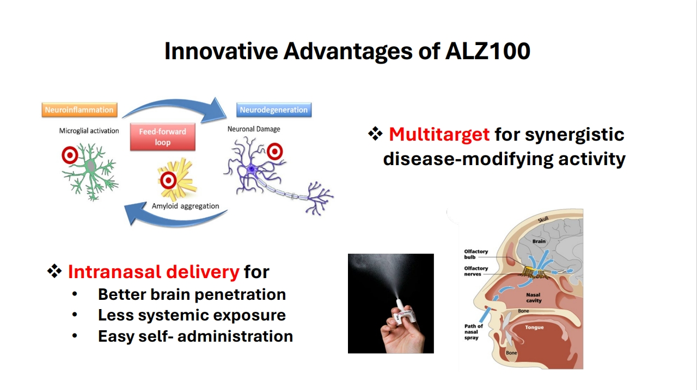
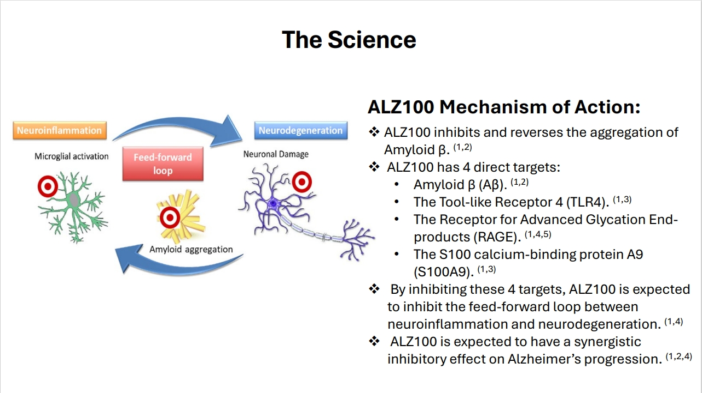
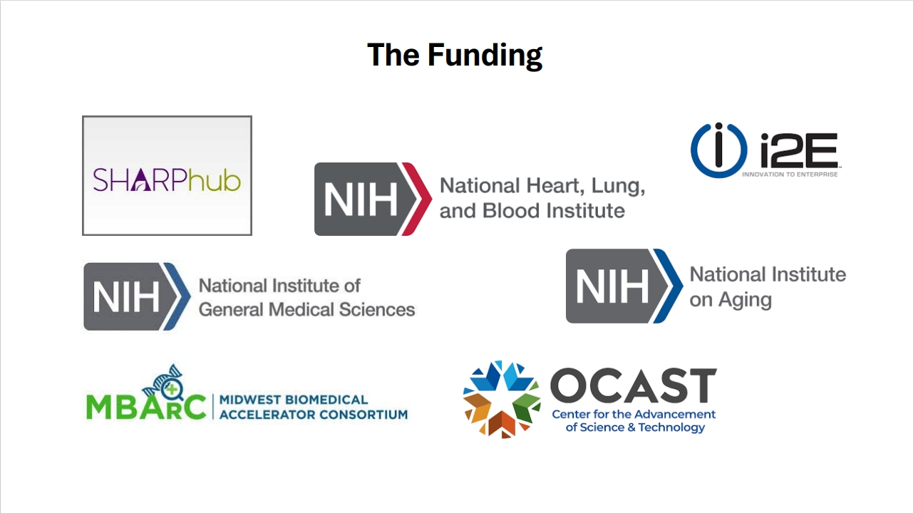

Relevant Publications:
1. Kasus-Jacobi A, Washburn JL, Laurence RB, Pereira HA. Selecting Multitarget Peptides for Alzheimer's Disease. Biomolecules. 2022 Sep 27;12(10):1386. PMID: 36291595
; PMCID: PMC9599826
2. Kasus-Jacobi, A., Washburn, J., Land, C., Pereira, A. (2021). Neutrophil Granule Proteins Inhibit Amyloid Beta Aggregation and Neurotoxicity. Curr Alzheimer Res, 18(5), 414-427. PMID: 34429047
; PMCID: PMC979194
3. Kasus-Jacobi A., Land C.A., Stock A.J., Washburn J.L. and Pereira H.A. (2020) Antimicrobial peptides derived from the immune defense protein CAP37 inhibit TLR4 activation by S100A9. Invest Ophthalmol Vis Sci. Apr 9;61(4):16. PMID: 32298435
; PMCID: PMC7401491
4. Stock A.J., Kasus-Jacobi A. and Pereira H.A. (2018). The role of neutrophil granule proteins in neuroinflammation and Alzheimer's disease. J Neuroinflammation, 15(1):240. Review. PMID: 30149799; PMCID: PMC6112130
5. Stock AJ, Kasus-Jacobi A, Wren JD, Sjoelund VH, Prestwich GD, Pereira HA. The Role of Neutrophil Proteins on the Amyloid Beta-RAGE Axis. PLoS One. 2016 Sep 27;11(9):e0163330. PMID: 27676391; PMCID: PMC5038948
6. Brock AJ, Kasus-Jacobi A, Lerner M, Logan S, Adesina AM, Anne Pereira H. The antimicrobial protein, CAP37, is upregulated in pyramidal neurons during Alzheimer's disease. Histochem Cell Biol. 2015 Oct;144(4):293-308. PMID: 26170148
; PMCID: PMC457539
